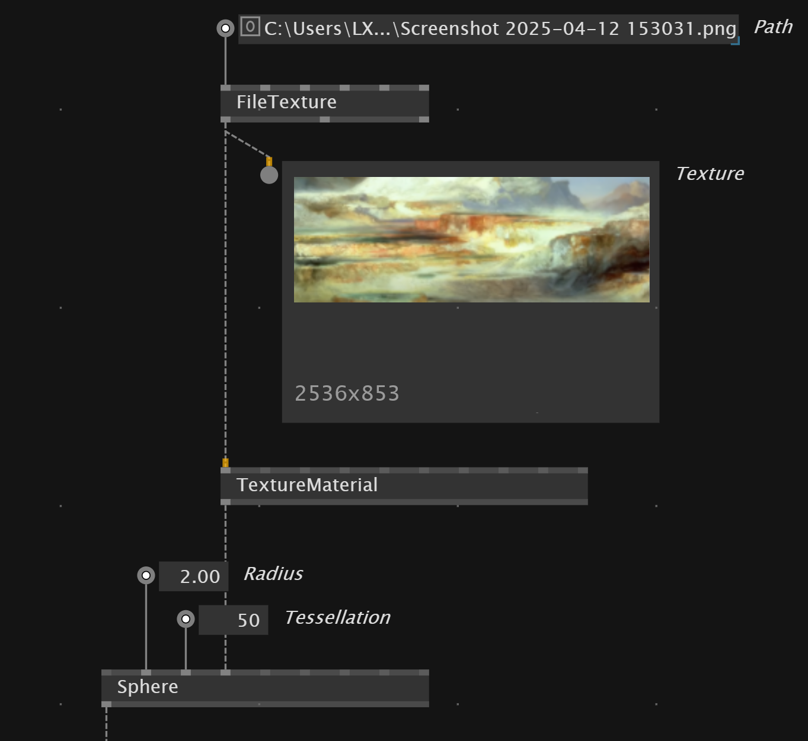

Stride
Stride is the build-in 3D render engine of vvvv.
Stride contains primitives, shaders, lights and more. We output our stride composition into a SceneWindow.
Shortcuts
Reset camera in RenderWindow - R
Show helper in Scene - F4
Transformations
For basic information about transformations see here.
Transform between
The TransformBetween node allows to transform a shape so it is positioned between the two input positions.

Child Transformations
To have shape being transformed relative to a parent shape we can set them as a Child entity to the parent.
Scale shape uniformly
The UniformScale allows us to scale a shape on all three axis with one scalar value.
Materials
With the ColorMaterial node we can set a material for the meshes of the primitives. Stride also has TextureMaterial, PBRMaterials.
Color Material
When using Color Material shading is disabled and lights won'T have any effect on the volume.
PBR Material
PBRMaterials enable shadows and the define how lights will be reflected on the volume.
To set the transparency on a PBRMaterial we can use a Blend node and set alpha value.
Texture as Diffuse Color of PBR
With a ColorMap node we can translate a texture into a diffuse color input for pbr materials
TextureMaterial
If we want to apply textures to our model we can load the texture with FileTextureplug that into a TextureMaterial.

Primitives
Stride brings build-in primitives: - Box - BoxSphere - Capsule - Cone - Cylinder - Disc - Plane - Sphere - Teapot - Torus
Data types
Entity - models, lights, cameras Material - change look of entities when rendered Texture - image format
Group
We can combine multiple primitives in a Group node.
Group spread of elements
After a Loop we get a spread of entities. With a Group(Spectral) node we can convert the spread into a single entity.
Light
To see something in our scene we should add a light source. Stride has multiple lights: - AmbientLight - DirectionalLight - SkyboxLight - PointLight
We also can add multiple light source with a Group node.
SkyboxLight
Allows you to add your own cubemap as the light source.
Shadows
In the primitive node we can define if it is a ShadowCaster or not.
Camera
When there is no Camera connected to the scene VVVV assumes the default orbit camera, which allows you to navigate through the scene.
When you put your own camera they need to be connected to the root scene and the SceneWindow
Render
To render our scene we need to join the primitives, groups,lights in a RootScene. This then get's plugged into
the SceneWindow
In the `SceneWindow we can set also the background color of our render.
Render out image
When we want to just render our scene as an image we can plug RootSceneand Camera into a SceneTexture and then connect this to a TextureWindow node.
FullScreenQuadRenderer
We can use FullScreenQuadRenderer to show a texture or image full screen in the RenderWindow.
Render Mesh in Wireframe
Stride has a Wireframe node that allows to render a MeshRenderer with a wireframe material. It is a advanced node.
PostFX
We can apply PostFX by plugging the node into the SceneWindow PostFX input.
Or we render into RenderTexture
Fog
The Fog node enables fog in the scene.
Outline
Outline creates a cartoon style effect.
Grain
We can apply grain by plugging FilmGrain in to a Cons(Collection.Spread) and then into Color Transforms input.

LightStreak
Shining effect along bright areas direction.
LocalReflection
If you have for example a metal material for your shape and you want that the other objects in the scene get properly reflected on the material
we can use LocalReflection PostFX node. It can affect your performance.
Effects
https://doc.stride3d.net/latest/en/manual/graphics/post-effects/index.html
Shortcuts
Reset view - long press r
Convert 3D into 2D texture
Instead of outputting RootScene into SceneWindow we connect it to SceneTexture. Also plugin a FlatCamera mode into the SceneTexture. We then can use Stride.TextureFX to further manipulate the texture.
Texture
Stride offers static and dynamic texture sources
-BubbleNoise
-Checkerboard
-Color
-ColorPalette
-Gradient
-Halo
-Halo(Gradient)
-Liquish
-Mandelbrot
-Neurons
-Noise
-Circle
-Electricity
-Polygon - allows to draw shapes from a multi point input - good to draw a data line with polygon
-Rectangle
-SkiaTexture
Specific drawing techniques
Draw a line with Polygon Node

Filters
Stride also offers a lot of Filter Shaders to manipulate the textures.
ShiftRGBThresholdQuantize- reduce colors of input to stepped color outputHSCB- hue,saturation,contrast,brightness color correction
Mixers
We can combine multiple texture with mixer nodes.
- Blend - Blend between two textures using different blending options.
- Pixelate - Blend between two textures using pixelate effect
- Dissolve - Blend between texture using rough pixely effect
Video
In Stride we have to convert a VideoIn or VideoPlayer with a VideoSourceToTexture node and then we can use it as an input for TextureMaterial or when Stride.TextureFX enabled into a TextureWindow
Mixing Skia and Stride
SkiaTexture transforms skia drawing into a texture. This allows us to use it for 3D objects material or apply texture effects to it.
A performant way to show Skia in stride is to use SkiaRenderer and input it into a RenderEntity. This we then can add to the RootScene of Stride.
Convert Vector3 to Vector2
XY Node lets you quickly pick first to values of Vector3 and outputs Vector2 data type.
Load Model into stride
With the FileModelwe can load fbx obj files into stride.
If you don't see the model you probably need to adapt the import scale size in the node
To preview the model in the scene we can use ModelEntity

To assign the textures to our model we need a combination of FileTexture, FileTextureGrayScale and FileTextureNormalMap
Get data from Mesh
To get the data like positions of vertex, uvs, normals etc we can first pick the mesh we want from our model with GetMeshes and then split the data with MeshSplit.
GPU Instancing
To do GPU Instancing in Stride we need a spread of position data and feed it into a InstancingSpreadComponent. This we can transform into Component value with FromValue(Spread) and feed it for example into a Box as component.
We also can convert the position data into color values with Vector3(Split), feed it into a RGBA node and then collect the color data in ColorPerInstance
Background
If you want to create for example a gradient background for your Stride scene you can add a Background(Stride.Models) node to your RootScene. You then can add Gradient node from Stride.TextureFX as a Texture input into the Background.
Shaders
Further infos
A whole tutorial is here